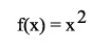
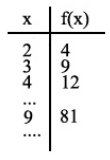
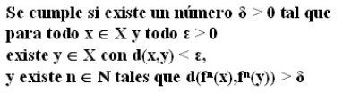
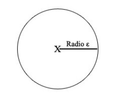
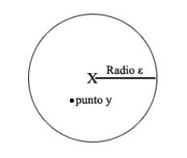
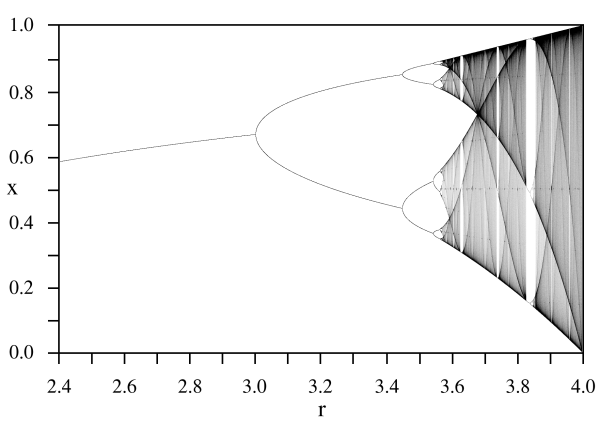

|
"Implica que dos estados que difieran cantidades imperceptibles, podrían evolucionar hacia dos estados considerablemente distintos. Entonces, si hay algún error al observar el estado presente -y en cualquier sistema real tales errores parecen inevitables-, bien podría ser imposible obtener una predicción aceptable del estado instantáneo en el futuro distante"
[Edward Lorenz]
Para los griegos, responsables del término "Χάος", el Caos fue la materia prima de nuestro mundo. La palabra provenía de la raíz indoeuropea "ghn", y aún no había sido confundida con el término "desorden".
Este sería también el origen del germánico Ginnungagap, el "aparente vacío" que consistía en una inmensa y ventosa nada que precedía a los "mundos superiores" de su cosmología, siendo el lugar de encuentro del frío intenso de Niflheim al Norte y el terrible calor de Muspelheim al Sur.
Literalmente, el "Χάος" griego es el "vacío que ocupa un hueco". En sus mitos de la creación, tal caos estaba compuesto por los cuatro elementos: tierra, agua, aire y fuego. De él emergería un mundo con forma, en el que se alzaron los primeros dioses.
Para Hesíodo, Gea surgió como primera cosa existente a partir de Caos. Para los pelasgos, uno de los pueblos más antiguos de Grecia, fue Eurínome, la diosa del todo, quien surgida de Caos creó con él el Cosmos. En los misterios órficos sería también considerado origen de las cosas, tanto mítica como filosóficamente.
La culpa de la corrupción moderna en el uso popular del término, que lo equipara con el desorden absoluto, parte del poeta romano Ovidio. Éste describiría al caos como confusa mezcla de materia que más tarde sería dividida en cuatro elementos y cuatro regiones; esto quiere decir, el Caos primordial era el opuesto al orden cósmico.
En la actualidad, el concepto de Caos ha recobrado relevancia. Unas nuevas matemáticas "del caos" resultan modelizar de forma satisfactoria mecanismos importantes en los procesos de gran cantidad de fenómenos naturales. Sus manifestaciones infectan la cultura popular. Se habla de mariposas que provocan terremotos agitando las alas, y películas como "PI" de Darren Aronofsky intentan (con bastante éxito, por cierto) retratar la idea de un mundo cuyas características lo convirtieran en un "sistema caótico". Místicas postmodernas como el discordianismo reconsideran la realidad como una sustancia sin forma que estructuramos a nuestro gusto manifestando como su orden y desorden como unos complementarios ying y yang. Fascinados por la belleza de los dibujos fractales, hallándolos reflejados en la naturaleza, surge el debate sobre si son por sí mismos otra forma de Arte. Los mecanismos para la alteración de la realidad y de la percepción parecen encontrar un fuerte apoyo en estas ideas, y surge una importante rama de la magia(k) moderna denominada "magia(k) del caos".
Sin embargo, la idea popular sobre el Caos sigue infectada -incluso entre quienes la usan para identificarse, como los "magos del caos"- por un matiz errado procedente de la cosmogonía de Ovidio que lo confundía con el desorden.
Ahora bien,... ¿cuál es el origen del actual revival del Caos? ¿Qué dicen realmente las Matemáticas del Caos? ¿Qué mundo están describiendo?
En este artículo pretendo divulgar los puntos más importantes de la teoría del Caos. Todo está extraído de libros y apuntes universitarios avanzados sobre la cuestión, pero mi intención es simplificarlo lo suficiente como para que pueda entenderse sin tener necesariamente una formación fuerte en ciencias. Y aun así, no voy a tener más remedio que usar notación especializada como eje (al fin y al cabo hablamos de matemáticas); en cualquier caso, me esforzaré para que sea lo más asequible, ayudando a descifrar los significados ocultos detrás de los símbolos.
Las temidas matemáticas
Para definir matemáticamente el caos, tenemos que comenzar plantando una base de conocimientos previa. Lo primero es definir una cosa que vamos a llamar un "sistema dinámico". El Caos, va a ser una propiedad de algunos "sistemas dinámicos" muy especiales.
Y como primer ingrediente, vamos a introducir dos términos. Consideremos un "espacio métrico" que llamaremos "D", que es el espacio infinito en el que suceden las cosas matemáticas. Consideremos también una "aplicación" que denominaremos "f(x)", dentro de este espacio métrico "D": en f(x), "x" es el lugar inicial que tomamos en consideración, donde nos encontramos al principio, y por lo tanto f(x) es una operación que afecta a "x" y que da como resultado otro punto. Por ejemplo, podríamos considerar una aplicación como "f(x) = 2*x", que significa que "f(x) es el doble de x". Cuando asignemos un valor a x, resolviendo la ecuación obtendremos el valor de f(x), que en este caso es el doble. (Las letras "f" y "D" no implican nada por sí mismas, y podría haber elegido otras como símbolos).
Dije que el espacio métrico es el lugar en el que se aplica la función: por ejemplo, un espacio métrico podrían ser todos los números positivos, o todos los enteros (los números positivos y los negativos), etcétera. Si fuera el espacio métrico de los enteros, esto significaría que sólo podemos tomar números sin fracciones como valores de x (y claro, para f(x), que es el doble de x). Pero por lo general estaremos hablando de espacios de números "reales", que es un tipo de números donde por así decirlo apenas tenemos restricciones, y vamos a tener fracciones.
Otro ejemplo de aplicación "f(x)" será:
 (1)
Esto significa que al punto al que se lo apliquemos, lo elevaremos al cuadrado (lo multiplicamos por sí mismo). O sea, que si tenemos el punto x=3 en el espacio métrico D y le aplicamos f(x) = x * x = 3 * 3, el resultado de f será 9 en el espacio D. Que vaya, lo del "espacio D" puede parecer que somos excesivamente formales, pero es buena costumbre afinar y atar cabos.
Ahora, veamos cómo varían los valores de f(x) al asignar distintos valores a "x". Cuando estas variaciones van de uno en uno y siempre creciendo, vamos a llamarlas "iteraciones":
 (2)
De vuelta al tema principal. En la teoría de sistemas dinámicos, lo que estudiamos es la conducta de las iteraciones "f(x)", dependiendo del valor inicial. Estudiamos específicamente algo llamado "órbitas", que son los resultados de aplicar f(x) un montón de veces a estos valores iniciales y a sus resultados subsiguientes. Es decir, aplicamos f, luego le aplicamos otra vez f al resultado, y así una y otra vez, hasta que vemos hacia dónde nos están llevando estas iteraciones. ¿Cuál será el resultado si la aplicamos diez veces, f(f(f(f(f(f(f(f(f(f(x)))))))))) ? ¿Y si aplicamos infinitas "f"s, en vez de diez?
Por ejemplo, la órbita que pertenece al valor inicial x=2 en la aplicación que describimos en la imagen (1) evolucionará como sigue: f(2) = 4, f(4) = 16, f(16) = 256, etcétera, tal que el número es mayor en cada iteración. Cuando apliquemos infinitas "f"s, el valor resultante será infinitamente grande. De hecho, para la aplicación en la figura (1) hay tres posibles órbitas, que dependen del valor inicial de 'x':
* Si x es mayor que uno o menor que -1, la órbita diverge: el resultado final es infinito.
* Si x es menor que 1 o mayor que -1, converge: el resultado final es 0.
* Si x es igual a 1, convergerá: el resultado final tras aplicar f infinitas veces, es 1.
Estas órbitas tienen algunas otras propiedades, pero podemos detenernos aquí. Tenemos suficiente material para continuar y describir, ¿de qué trata el Caos?
Ahora, un sistema dinámico (definido por un espacio métrico D y una aplicación f necesita satisfacer tres requerimientos a la hora de ser considerado caótico. Formularé y explicaré estas tres características que definen un sistema caótico, lo que mostrará de qué trata realmente el Caos:
* Condición 1. Un sistema caótico debe ser sensible a sus condiciones iniciales.
Primero, vamos a escribir esta condición matemáticamente... y luego intentaremos descifrar qué pone ahí. No se me asusten. La condición se cumple en caso de que...

Vale, ¿qué diablos pone ahí arriba? Pues basicamente, aquello de que si una mariposa agita sus alas en Pekín, los pobres habitantes de Nueva York tienen que soportar su enésimo huracán. De verdad que lo pone. O vaya, lo haría si consideramos la realidad como un sistema caótico.
Vamos a descifrarlo.
Esta expresión matemática, empieza nombrando dos cosas, cuando dice "para todo x y todo ε". Esta "x" es un punto fijo, y "ε" es una distancia desde ese punto a cualquier otro lugar. Para hacerlo menos abstracto, si la "x" fuera Nueva York y la "ε" fuera 10, podríamos estar hablando de una distancia de 10 kilómetros a Nueva York. Si pintamos el punto x y todos los puntos que se encuentran a una distancia ε de este, nos queda un círculo con x en el centro y radio ε:

Ahora, para todos los valores de x y de la distancia ε, es decir, para cualquier círculo centrado donde queramos y con el radio que queramos, va a haber como mínimo un punto "y" dentro que va a cumplir una serie de condiciones. (El punto "y" puede ser cualquier lugar, siempre que esté en un radio menor a 10 kilómetros de Nueva York)

La característica particular de ese punto que hemos llamado "y", es que cuando aplicamos tanto a "x" como a "y" la función f repetidas veces, va a llegar una iteración en la que la distancia entre ellos va a ser necesariamente mayor que una cantidad siempre fija para este sistema, que vamos a llamar "δ".
Es difícil poner aquí un ejemplo que implique Nueva York. Pero vayamos con algo más realista. Supongamos que el punto "x" indica una gota de agua en el centro de una nube, mientras que "y" es una gota de agua cercana. De hecho, la distancia que separa a "x" y a "y", es menor que "ε". Entonces, lo que dice la cosa aparentemente indescifrable del principio, es que si llueve, ambas gotas de agua van a estar separadas como mínimo por una distancia δ.
A ese δ le vamos a llamar "constante de sensibilidad", porque cuanto mayor sea δ, más sensible va a ser el sistema a las condiciones iniciales, que es lo mismo que decir, "lo efectivos que podamos ser determinando tales condiciones iniciales, si queremos predecir cómo se comportará ese sistema". Ojo, que lo importante de esto es que sucede para todos los puntos, y es por ello que hablamos de un sistema dinámico que es sensible al completo a las condiciones iniciales.
Para ver un poco más claro las implicaciones de esto, porque ya estamos considerando los puntos x e y, y las distancias δ y ε, y son unos cuantas cosas: tenemos que fijarnos en que cuando dibujamos el círculo, para el radio hablamos de que la condición es válida para TODOS los "ε". O sea, que tanto nos vale con radio ε = 1 como nos vale también con radio = 0.00000000001. Si δ vale 100 centímetros, ya pueden estar las dos gotas de agua separadas en el estado inicial por apenas unos milímetros, incluso por unas millonésimas de milímetro, que cuando llueva estarán separadas como mínimo 100 centímetros.
¿Y esto que implica? Recapitulemos. Estamos aplicando sobre dos puntos "x" e "y" muy muy cercanos (separados por una distancia menor a "ε") una y otra vez la función "f". Si esta "f" es caótica, va a llegar siempre un momento en que estén separados como mínimo por una distancia de δ. Llamamos a este efecto ser "sensible a las condiciones iniciales" porque lo que significa es que hasta un error minúsculo al medir las condiciones iniciales del sistema nos puede producir un cambio notable después de iterar la función f, un error que será como mínimo tan grande como δ.
Esto de hecho es tan "grave", que en los sistemas caóticos se considera que podemos reproducir un comportamiento "típico" del sistema en cuestión, pero no uno en particular. Dado que podemos hacer "ε" tan pequeño como queramos, no importa lo exactos que sean nuestros instrumentos: nunca pueden ser lo bastante exactos para predecir lo que sucederá. El sistema al final es siempre impredecible. Esta es la mariposa que crea los huracanes.
* Condición 2: Un sistema caótico debe ser topológicamente transitivo
Empezaré de nuevo con una definición matemática terrible, y procederé a descifrarla. Esta es más sencilla. De verdad, si te has quedado con lo anterior, el resto es sencillo:
- El espacio métrico D, con la aplicación f, tiene la característica de "topológicamente transitivo" si dados dos subconjuntos abiertos cualesquiera U y V del espacio D, existe k tal que existen puntos en la intersección entre el subconjunto abierto V, y f(U).
En esencia, esto nos está diciendo que iterando la función "f" un número determinado de veces ("k" veces, "k" es la letra con la que indicamos cuántas son ese número de veces), podemos acceder a cualquier lugar desde cualquier otro lugar.
Eso de "conjunto abierto", es la manera en la que llamamos formalmente a un "lugar" que puedes visitar (también lo llamamos "intervalo"). Este "lugar" va a ser siempre un conjunto que contenga varios puntos, definido por unos límites. Un "conjunto abierto" se representa como (punto1,punto2), y todo lo que es mayor que punto1 y todo lo que es menor que punto2, está dentro del intervalo. Por ejemplo, un "conjunto abierto" definido como (1 , 2) contendría valores como 1.2, 1.5, 1.823235, etcétera.
Ahora, supongamos que tenemos dos conjuntos. Uno es U, que es todo lo que hay entre "1" y "2". Así que decimos que U = (1,2). El otro es V, que representa todo lo que puedes encontrar entre "10" y "11". Lo definimos formalmente como V = (10,11). Si el sistema dinámico (X,f) cumple esta condición de ser "topológicamente transitivo", al ir aplicando f empezando por cualquier punto que pertenezca a U (entre 1 y 2), siempre llegará una iteración -aunque tengamos que esperar mucho- en la que el resultado de aplicar f va a ser un número entre 10 y 11. Siempre.
Si hacemos que x sea 1.5, y tenemos una f que nos va dando f(1.5) = 4,, f(4) = 8,, f(8) = 10.5 <== ¡aquí se cumple! Si esto sucediera siempre, para todas las posibilidades de U en al menos un "x" que pertenezca a "U", la condición se cumpliría y la "k" de la definición valdría "3" (el número de pasos dado). En este caso, f(10.5) podría ser cualquier cosa, como 23. Eso ya da igual; lo importante es que en los sistemas caóticos siempre puedes visitar un intervalo de puntos iterando a partir de cualquier otro intervalo.
Es más, si se cumple esta condición de ser topológicamente transitivo, también se dará en condiciones más extremas, y siempre sucederá para todas ellas (vaya, por eso usamos un lenguaje formal con letras, para referirnos a todos los casos). Si definimos que U = (1.0000001, 1.0000002) y consideramos un punto inicial "x" que se encuentre en el intervalo definido por U, cuando iteramos aplicando f repetidas veces empezando por la "x" inicial, vamos a llegar siempre a un punto que pertenezca al conjunto V = (10.1111111, 10.1111112). También llegaremos a un punto dentro de V = (5000.1111111, 5000.1111112), y también llegaremos a TODO conjunto abierto V que seamos capaces de concebir.
Dado que esta característica afecta a todos los conjuntos abiertos, se la llama también "irreducibilidad". Lo que significa, es que no podemos aislar y estudiar una parte del sistema, como si estuviera de algún modo separada del todo: no lo está. Todo está relacionado con todo. Los lectores astutos deducirán otra cosa de esta condición: todo es posible,... aunque podría llevarte mucho tiempo llegar hasta ahí.
* Condición 3: Un sistema caótico debe tener puntos periódicos densos
Esta es la última condición, y aquí es donde vamos a romper la baraja. Hasta ahora las dos propiedades enunciadas nos llevarían al concepto popular de caos como desorden absoluto, propios ya del moderno cliché del "caota": todo es posible, todo lugar se puede visitar,... con nuestras rutas desviadas por leves aleteos de mariposa, ya que todo está relacionado entre sí.
La cultura del Caos habitualmente se detiene aquí. Se desarrolla vergonzosamente en una relativización radical que la deja vacía y postmoderna.
Pero el Caos no se acaba aquí.
Su tercera característica, la tercera condición para que un sistema sea caótico, es la existencia de una profunda forma de organización. No se trata de "orden". Tampoco es "desorden". Es una cosa distinta. Consiste en algo que podríamos considerar como si fuera un cierto "patrón" global en la forma en que el caos se comporta, una especie de personalidad cíclica; un patrón que se sitúa como subyacente a todo, un patrón que es inherente al Caos.
Pero antes de que lleguemos al fin hasta allá, es necesario que introduzca un pequeño concepto matemático más, el de "órbita periódica". Lo de ser periódico es algo que les sucede a las órbitas, y significa que los valores que obtenemos al aplicar la "f" muchas veces van a oscilar entre dos o más puntos.
Es decir, si por ejemplo definimos f(x) = -x, cada vez que se aplique f(x) oscilaremos entre dos puntos. Si el punto inicial es 3, la órbita oscilará así: 3, -3, 3, -3, 3, -3,...
Necesitaremos otro concepto, que es el de "periodo". ¿Cuántas iteraciones tenemos que hacer hasta que un valor se repita?. En el caso anterior es cada dos iteraciones, con lo que vamos a considerar que se trata de una órbita de periodo 2. Lo cual quiere decir que si un punto es periódico y aplicamos f dos veces, el resultado va a ser ese mismo punto.
¡Pero una órbita puede ser de periodos mayores a 2! Así, si en un punto tuvieramos una órbita de periodo 5, cada cinco veces que aplicaramos "f" volveríamos al mismo punto. Es decir, en ese caso las iteraciones de f(x) podrían tener un aspecto como este: {-1, 3, 1, 4, 0, -1, 3, 1, 4, 0, -1, 3,...}
Y tras esta introducción, desvelemos ya la condición en su forma matemática. Esta vez es bastante sencillo:
* Los puntos periódicos del sistema son densos si para cualquier subconjunto abierto U, existe siempre (al menos) un punto periódico.
¿Qué quiere decir esto? Si regresamos la segunda condición, un "subconjunto abierto" era un grupo de puntos juntos, que se hallan dentro de un intervalo. Por ejemplo, si U=(1,2), estamos hablando de todos los puntos entre 1 y 2, ambos inclusive.
Lo que significa entonces esta condición, es que tomemos el conjunto abierto que tomemos, ya sea (1,2) o ya sea (0.0001, 0.0002) o lo que se nos ocurra, dentro siempre va a haber un punto periódico. Lo que significa esto es muy interesante: aunque el Caos tiene la propiedad de impredecibilidad (sensibilidad a las condiciones iniciales) e incluso si tiene la propiedad de irreducibilidad ("topológicamente transitivo"), tiene una propiedad que introduce una profunda regularidad.
Esta regularidad implica que el Caos es recorrido por todas partes por patrones. Hay algo, hay un sistema estructurador "más profundo" que es parte de los mecanismos básicos del Caos, y que se encuentra más allá del "orden".
Considera las implicaciones de combinar esta condición con la naturaleza impredecible del Caos, y sus posibilidades sin fin. Si cogieras una gota de agua de este inmenso océano de Caos, podrías deducir:
- Primera condición: Que no puedes predecir dónde terminará una parte de esa gota de agua.
- Segunda condición: Que está relacionada con el resto de gotas de agua de un modo que hace posible que acabe en la parte más remota de este océano infinito. Y puedes estar seguro de que si le das suficiente tiempo, llegará hasta ahí.
- Tercera condición: Que el océano está compuesto de patrones que permean cada pequeña gota de agua, que hacen que en todas las gotas de agua al menos una parte de ella se comporte cíclicamente, estructurando cada parte del infinito océano a un nivel más profundo que cualquier cosa que pudieramos concebir como "orden" o "desorden".
* Sistemas caóticos: ¿Dónde se encuentran?
La mayor parte de los sistemas que encontramos en el mundo real tienen una conducta que se puede modelizar mediante sistemas caóticos. En particular, destaca su uso como mecanismo para completar el "ruído", la imprecisión que dejaban las ecuaciones de la física clásica. Su aplicación no obstante, no se reduce a la física: química o biología son otros de los campos en los que se extiende su uso, y ha alcanzado tal amplitud en sus aplicaciones que algunos científicos consideran que un entendimiento de las bases del Caos es tan importante como entender las teorías de la relatividad y de la mecánica cuántica.
Algunos campos importantes en los que se aplican las matemáticas del caos son:
* Física de fluídos, mecánica cuántica, fenómenos oscilatorios eléctricos y mecánicos (como el latido de un corazón o la actividad eléctrica del cerebro).
* Predicción del tiempo.
* Comportamiento de sistemas económicos, comportamiento de la bolsa.
* Fluctuaciones en poblaciones de generación en generación, modelado de ecosistemas.
* El modelado de la órbita de Hyperion alrededor de Saturno, y en el pasado de otros satélites en el Sistema Solar. Se considera que podría ser adecuado también al comportamiento del cinturón de asteroides, y posiblemente a la la órbita de Plutón.
* El lanzamiento al aire de una moneda.
* El camino que recorre una bola en un pinball.
* La caída de la hoja de un árbol.
Quienes se adhieren con más fuerza a esta teoría, argumentan que la realidad en sí, desde una perspectiva global, sería modelizable como un sistema caótico.
La realidad es impredecible, y es imposible medir de forma exacta sus variables. Podemos generar modelos "correctos" en su funcionamiento, pero no simular el estado exacto actual.
Es irreductible: nunca es suficiente estudiar una de sus partes, sin estudiar todas las demás. Todas las partes dependen de todas las demás y las influyen. Todo está relacionado.
Y aun así, en su compleja interdependencia e irreducibilidad, la Realidad posee una regularidad más profunda, una estructura sutil que permea cada átomo, un patrón apenas visible hasta que sintonizamos con Ella. Todo tiene que ver con esos "puntos periódicos densos". Otros mundos se abren dentro de nuestro mundo, más allá de esas inconsistencias que los humanos intentan ignorar habitualmente cubriéndolas con la ilusión del orden, olvidando que nada es cierto y que todo está permitido, y que existe una organización más profunda, un patrón más profundo, apenas un paso más allá del orden y el desorden.

|
 RSS
RSS